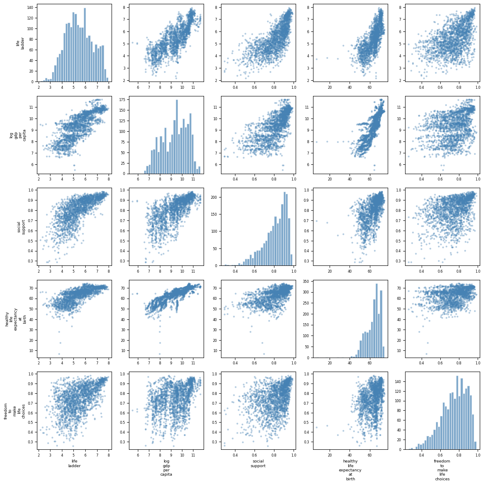
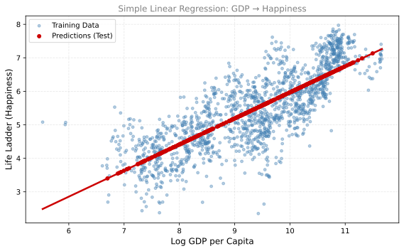
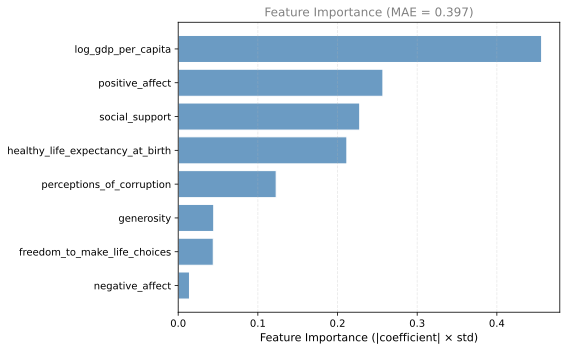
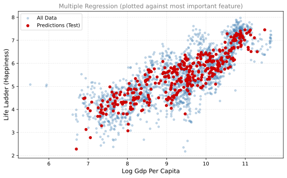

import pandas as pd
import numpy as np
import matplotlib.pyplot as plt
from sklearn.linear_model import LinearRegression
from sklearn.model_selection import train_test_split
from sklearn import metricsLab: Linear Regression and World Happiness
statistics
lab
In this lab you will use the World Happiness Report dataset to explore linear regression. You will fit models to predict a country’s happiness score based on various features like GDP, social support, and life expectancy. You will also see how selecting different features affects the model.
Linear regression is the technique we derived in the MLE and Linear Regression section: find the line (or hyperplane) that best fits the data by minimizing the sum of squared errors.
Import Libraries
Load and Inspect the Data
The World Happiness Report surveys people in different countries about their well-being. Each row in the dataset represents one country in one year. The “life ladder” column is the happiness score (higher = happier). The other columns are possible explanations for why some countries are happier than others.
df = pd.read_csv('../../media/world_happiness.csv')
# Rename columns to remove spaces
df = df.rename(columns={i: "_".join(i.split(" ")).lower() for i in df.columns})
# Drop rows with missing values
df = df.dropna()
print(f"Dataset shape: {df.shape}")
df.head()Dataset shape: (1958, 11)| country_name | year | life_ladder | log_gdp_per_capita | social_support | healthy_life_expectancy_at_birth | freedom_to_make_life_choices | generosity | perceptions_of_corruption | positive_affect | negative_affect | |
|---|---|---|---|---|---|---|---|---|---|---|---|
| 0 | Afghanistan | 2008 | 3.724 | 7.350 | 0.451 | 50.5 | 0.718 | 0.168 | 0.882 | 0.414 | 0.258 |
| 1 | Afghanistan | 2009 | 4.402 | 7.509 | 0.552 | 50.8 | 0.679 | 0.191 | 0.850 | 0.481 | 0.237 |
| 2 | Afghanistan | 2010 | 4.758 | 7.614 | 0.539 | 51.1 | 0.600 | 0.121 | 0.707 | 0.517 | 0.275 |
| 3 | Afghanistan | 2011 | 3.832 | 7.581 | 0.521 | 51.4 | 0.496 | 0.164 | 0.731 | 0.480 | 0.267 |
| 4 | Afghanistan | 2012 | 3.783 | 7.661 | 0.521 | 51.7 | 0.531 | 0.238 | 0.776 | 0.614 | 0.268 |
The dataset has the following columns:
- country_name: name of the country
- year: year of data collection
- life_ladder: happiness score (this is what we want to predict)
- log_gdp_per_capita: log of GDP per capita
- social_support: social support index
- healthy_life_expectancy_at_birth: healthy life expectancy
- freedom_to_make_life_choices: freedom index
- generosity: generosity index
- perceptions_of_corruption: corruption perception
- positive_affect: positive emotions
- negative_affect: negative emotions
Explore the Data
Before fitting a model, it helps to visualize the data. The pairplot below shows scatter plots for every pair of variables. Look for elongated clouds of points. Those indicate a linear relationship (one variable tends to increase when the other does), which means linear regression has a good chance of working.
%config InlineBackend.figure_formats = ['png']
# Select numeric columns for pairplot (exclude country_name)
cols_to_plot = ['life_ladder', 'log_gdp_per_capita', 'social_support',
'healthy_life_expectancy_at_birth', 'freedom_to_make_life_choices']
fig = plt.figure(figsize=(12, 12))
for i, col_y in enumerate(cols_to_plot):
for j, col_x in enumerate(cols_to_plot):
ax = fig.add_subplot(len(cols_to_plot), len(cols_to_plot), i * len(cols_to_plot) + j + 1)
if i == j:
ax.hist(df[col_x], bins=30, color='#4682B4', alpha=0.7, edgecolor='white')
else:
ax.scatter(df[col_x], df[col_y], s=5, alpha=0.3, color='#4682B4')
if i == len(cols_to_plot) - 1:
ax.set_xlabel(col_x.replace('_', '\n'), fontsize=7)
if j == 0:
ax.set_ylabel(col_y.replace('_', '\n'), fontsize=7)
ax.tick_params(labelsize=6)
plt.tight_layout()
plt.show()
Some scatter plots show strong linear relationships (elongated shapes). These pairs are good candidates for regression.
Simple Linear Regression
Let us start with the simplest case: predicting happiness (life_ladder) from a single variable, log_gdp_per_capita (a measure of a country’s wealth).
The idea is simple: find the line \(y = wx + b\) that best fits the data. Here \(w\) is the slope (how much happiness changes per unit of GDP) and \(b\) is the intercept (baseline happiness when GDP is zero).
Train-Test Split
Before fitting the model, we split the data into two parts:
- Training set (80%): used to find the best line
- Test set (20%): held back to check if the line works on data it has never seen
This prevents us from being fooled by a model that memorizes the training data but fails on new data (overfitting, which we discussed in the regularization section).
%config InlineBackend.figure_formats = ['svg']
# Select features and target
X = df[['log_gdp_per_capita']]
y = df['life_ladder']
# Train-test split (80% train, 20% test)
X_train, X_test, y_train, y_test = train_test_split(X, y, test_size=0.2, random_state=42)
print(f"Training samples: {len(X_train)}")
print(f"Test samples: {len(X_test)}")Training samples: 1566
Test samples: 392Fit the Model
Fitting the model means finding the values of \(w\) (slope) and \(b\) (intercept) that minimize the sum of squared errors on the training data. This is exactly what MLE does under Gaussian noise assumptions.
# Create and fit the linear regression model
lr = LinearRegression().fit(X_train, y_train)
# Get the parameters
w = lr.coef_[0]
b = lr.intercept_
print(f"Model: life_ladder = {w:.3f} × log_gdp_per_capita + {b:.3f}")Model: life_ladder = 0.778 × log_gdp_per_capita + -1.814Evaluate
Now we check: how well does the line predict happiness on the test set (data the model has never seen)?
The Mean Absolute Error (MAE) tells us the average size of our mistakes. If MAE = 0.57, it means our predictions are off by about 0.57 happiness points on average (on a scale where scores typically range from about 3 to 8).
# Predictions on test set
y_test_preds = lr.predict(X_test)
# Mean absolute error
mae = metrics.mean_absolute_error(y_test, y_test_preds)
print(f"Mean Absolute Error: {mae:.2f}")Mean Absolute Error: 0.57Visualize
The blue dots are real data (training set). The red dots are the model’s predictions on the test set. Notice that all predictions lie on a straight line. That is because our model is a straight line. The real data has much more scatter because GDP alone does not fully explain happiness (other factors like social support and freedom also matter).
%config InlineBackend.figure_formats = ['svg']
fig, ax = plt.subplots(figsize=(8, 5))
ax.scatter(X_train, y_train, s=15, alpha=0.4, color='#4682B4', label='Training Data')
ax.scatter(X_test, y_test_preds, s=25, color='#CC0000', zorder=5, label='Predictions (Test)')
# Plot regression line
x_line = np.linspace(X_train.min(), X_train.max(), 100)
ax.plot(x_line, w * x_line + b, color='#CC0000', linewidth=2.5)
ax.set_xlabel('Log GDP per Capita', fontsize=12)
ax.set_ylabel('Life Ladder (Happiness)', fontsize=12)
ax.set_title('Simple Linear Regression: GDP → Happiness', fontsize=12, color='gray')
ax.legend(fontsize=10)
ax.grid(linestyle='--', alpha=0.3)
plt.tight_layout()
plt.show()
The predictions all lie on a straight line. The data has much more variation, but GDP alone explains a good portion of happiness.
Multiple Linear Regression
Often more than one variable explains happiness. Instead of the equation \(y = wx + b\) (one feature), we can use \(y = w_1 x_1 + w_2 x_2 + \cdots + w_k x_k + b\) (many features). This is called multiple linear regression. The model finds the best combination of all features to predict happiness.
Let us see how the prediction error changes as we add more features:
%config InlineBackend.figure_formats = ['svg']
def fit_and_evaluate(data, features):
"""Fit a linear regression with given features and report results."""
X = data[features]
y = data['life_ladder']
X_train, X_test, y_train, y_test = train_test_split(X, y, test_size=0.2, random_state=42)
lr = LinearRegression().fit(X_train, y_train)
y_preds = lr.predict(X_test)
mae = metrics.mean_absolute_error(y_test, y_preds)
# Feature importance (absolute coefficient × std of feature)
importance = np.abs(lr.coef_) * X_train.std().values
importance_df = pd.DataFrame({
'Feature': features,
'Importance': importance
}).sort_values('Importance', ascending=True)
return mae, importance_df, lr
# Try different feature sets
feature_sets = [
['log_gdp_per_capita'],
['log_gdp_per_capita', 'social_support'],
['log_gdp_per_capita', 'social_support', 'healthy_life_expectancy_at_birth'],
['log_gdp_per_capita', 'social_support', 'healthy_life_expectancy_at_birth',
'freedom_to_make_life_choices', 'perceptions_of_corruption'],
]
print(f"{'Features':<60} {'MAE':>6}")
print("-" * 68)
for features in feature_sets:
mae, _, _ = fit_and_evaluate(df, features)
feat_str = ', '.join([f.split('_')[0] for f in features])
print(f"{feat_str:<60} {mae:.3f}")Features MAE
--------------------------------------------------------------------
log 0.566
log, social 0.525
log, social, healthy 0.510
log, social, healthy, freedom, perceptions 0.435Adding more features generally reduces the error. Let us visualize which features contribute the most. The feature importance tells you how much each variable influences the prediction. A taller bar means that variable matters more:
%config InlineBackend.figure_formats = ['svg']
all_features = ['log_gdp_per_capita', 'social_support', 'healthy_life_expectancy_at_birth',
'freedom_to_make_life_choices', 'generosity', 'perceptions_of_corruption',
'positive_affect', 'negative_affect']
mae, importance_df, lr = fit_and_evaluate(df, all_features)
fig, ax = plt.subplots(figsize=(8, 5))
ax.barh(importance_df['Feature'], importance_df['Importance'],
color='#4682B4', alpha=0.8, edgecolor='white')
ax.set_xlabel('Feature Importance (|coefficient| × std)', fontsize=11)
ax.set_title(f'Feature Importance (MAE = {mae:.3f})', fontsize=12, color='gray')
ax.grid(linestyle='--', alpha=0.3, axis='x')
plt.tight_layout()
plt.show()
Scatter Plot with Best Predictor
When we use multiple features, the model lives in a high-dimensional space (one dimension per feature). We cannot visualize all dimensions at once, so we plot predictions against the single most important feature. The predictions no longer form a perfect line in 2D because other features (not shown on the x-axis) also contribute to the prediction.
%config InlineBackend.figure_formats = ['svg']
# The most important feature
best_feature = importance_df.iloc[-1]['Feature']
X_full = df[all_features]
y_full = df['life_ladder']
X_train, X_test, y_train, y_test = train_test_split(X_full, y_full, test_size=0.2, random_state=42)
y_preds = lr.predict(X_test)
fig, ax = plt.subplots(figsize=(8, 5))
ax.scatter(df[best_feature], df['life_ladder'], s=15, alpha=0.3, color='#4682B4',
label='All Data')
ax.scatter(X_test[best_feature], y_preds, s=25, color='#CC0000', zorder=5,
label='Predictions (Test)')
ax.set_xlabel(best_feature.replace('_', ' ').title(), fontsize=12)
ax.set_ylabel('Life Ladder (Happiness)', fontsize=12)
ax.set_title(f'Multiple Regression (plotted against most important feature)', fontsize=12, color='gray')
ax.legend(fontsize=10)
ax.grid(linestyle='--', alpha=0.3)
plt.tight_layout()
plt.show()
Notice that with multiple features, the predictions no longer lie on a single line in 2D. The model uses information from all features to make predictions, but we can only visualize one dimension at a time.
Key Takeaways
- Simple linear regression uses one feature. The model is a line in 2D.
- Multiple linear regression uses many features. The model is a hyperplane in higher dimensions.
- Feature importance tells you which variables contribute most to predictions.
- Adding more relevant features generally reduces prediction error (lower MAE).
- GDP per capita is the strongest single predictor of happiness, but social support and life expectancy also matter significantly.